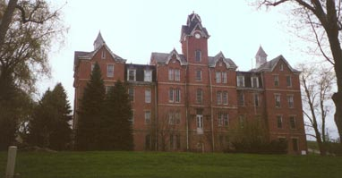

Three miles south of Mt. Vernon is the tiny hamlet of Bangs, one of those never-heard-of-it towns with a vaguely dirty name. What sets Bangs apart from your average suburban crossroads is the awesome building you see above. At one time it was the Knox County Poorhouse, but for some time now it has been known by a new name: the House of Nightmares.

Am I being dramatic? No, it actually is called the House of Nightmares, but only in the fall, when it's opened up to serve its only current function: the best damn haunted house attraction in central Ohio.
Way back in 1875 the Knox County trustees alotted money for the building of a new poorhouse, and construction was begun on the House of Nightmares. Three years later, the place was finished. At four stories tall and 40,000 square feet, it ranked as one of the largest buildings in the county.
It was in operation for over seventy-five years, housing the poor of Knox County. Residents raised crops in the land around the building and slept in dormitory-style residence rooms. The poorhouse was truly a house of nightmares for those unfortunate enough to be forced to bring their families there. It's probably because of all the misery the place was host to that it is now considered by some people to be genuinely haunted. Paupers' graves were discovered all around the poorhouse when development began nearby. There is even a rumor of a fatal elevator crash whose victims still linger inside the building.
In 1953 the poorhouse was shut down by county engineers who found it to be structurally unsound. In 1957 the Mt. Vernon Bible College (not to be confused with Mt. Vernon Nazarene College) purchased and repaired the building and moved their operation inside. The college occupied the House of Nightmares until the late 1980's, when it relocated to Virginia. Then, in the mid-1990's, somebody with some brains saw the potential for a killer haunted attraction inside the building. Currently the House of Nightmares operates every October from about the 5th through the 31st. You can see their official site at www.thehouseofnightmares.com.
I first became aware of the House of Nightmares when my girlfriend was incarcerated at Mt. Vernon Nazarene College. We wanted to find a good Halloween attraction to visit and noticed ads for the House of Nightmares. The night before it opened for the 2000 season we drove out and were blown away by the building. You can tell it's an abandoned building, but it's one that's been well cared-for.
The next night we paid our $8 and went through. I've been to a lot of these things and can say without hesitation that this one is my favorite. Maybe it's just the setting; a creepy old haunted place like this puts just about anything else to shame.
My girlfriend and I made a pact to come back to the place in the off-season, and in late March of 2001 we did just that, with Hoss and Jesus along with us. If you'd like to explore a former county poorhouse, defunct Christian College, and 125-year-old haunted house, click below and enter the House of Nightmares.